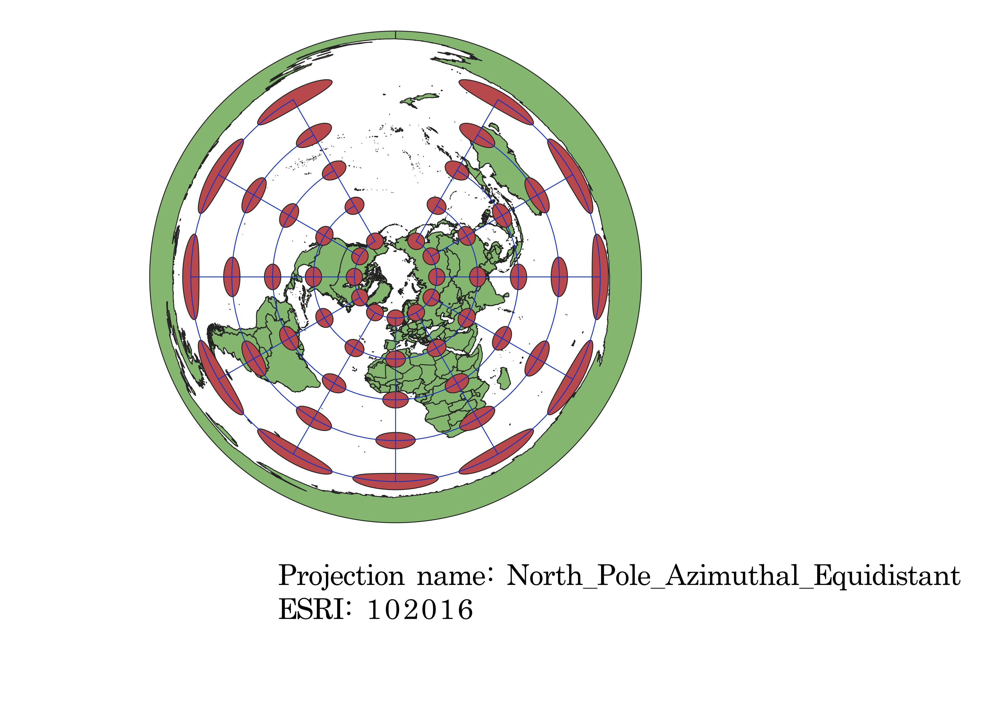
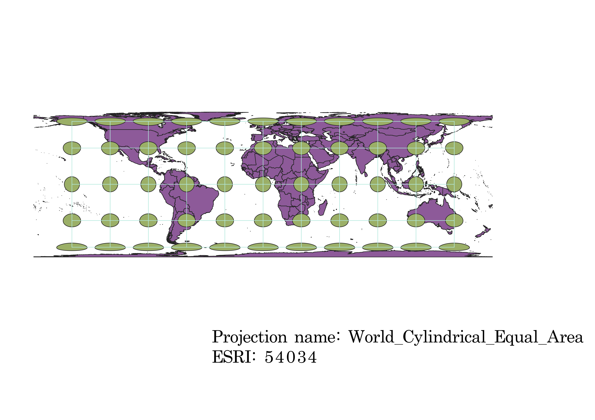
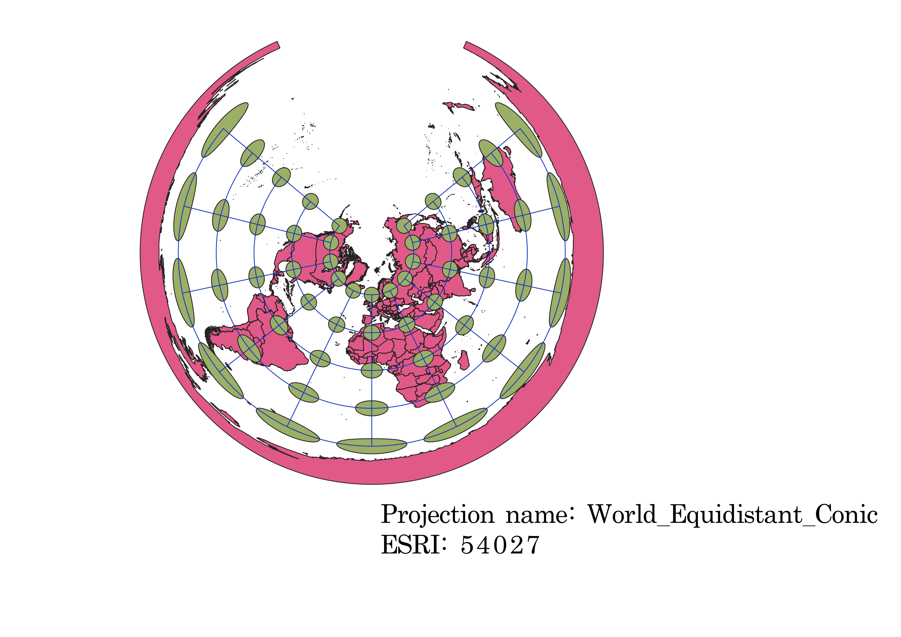
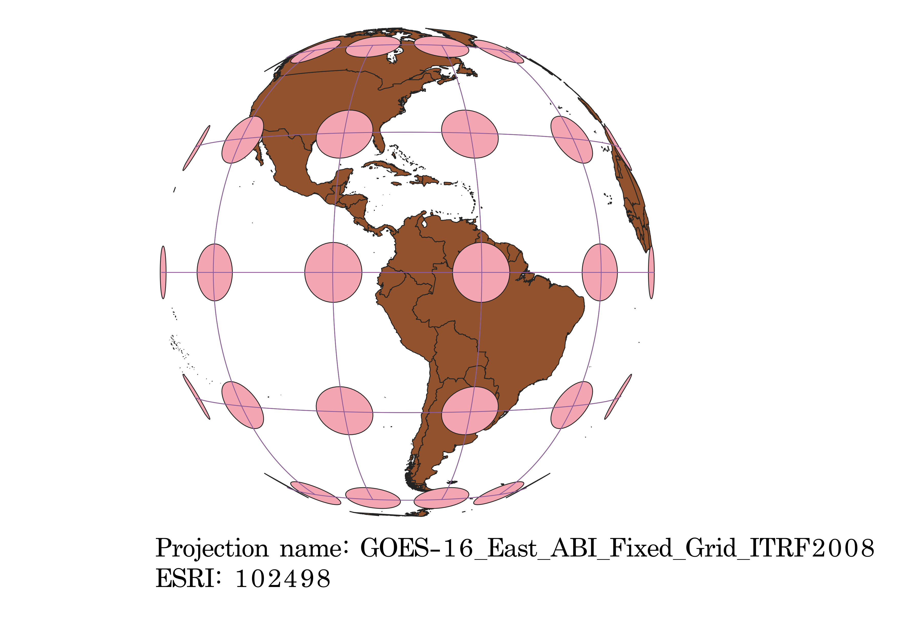
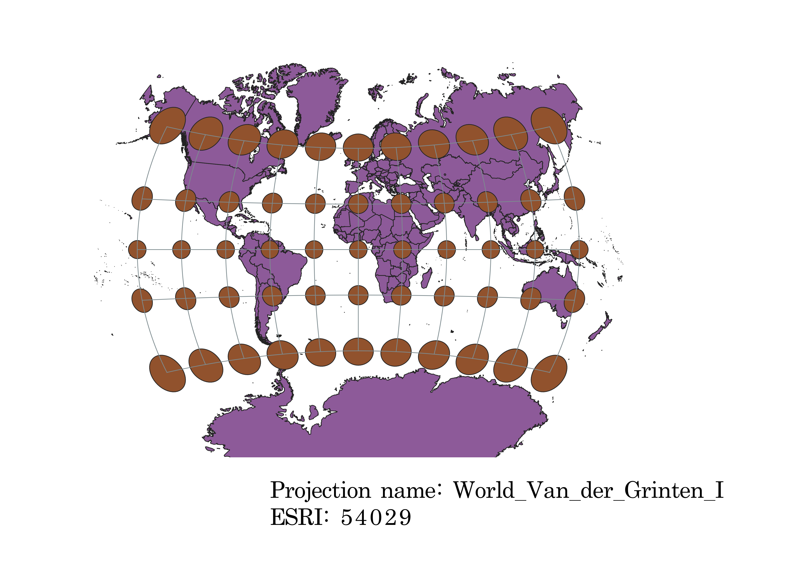
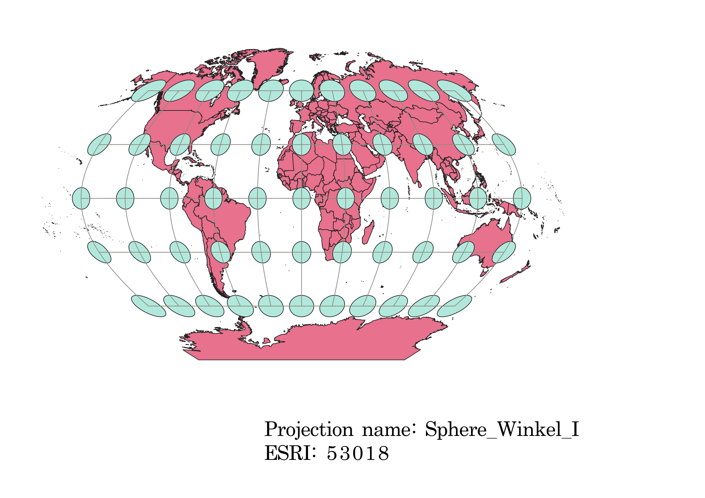
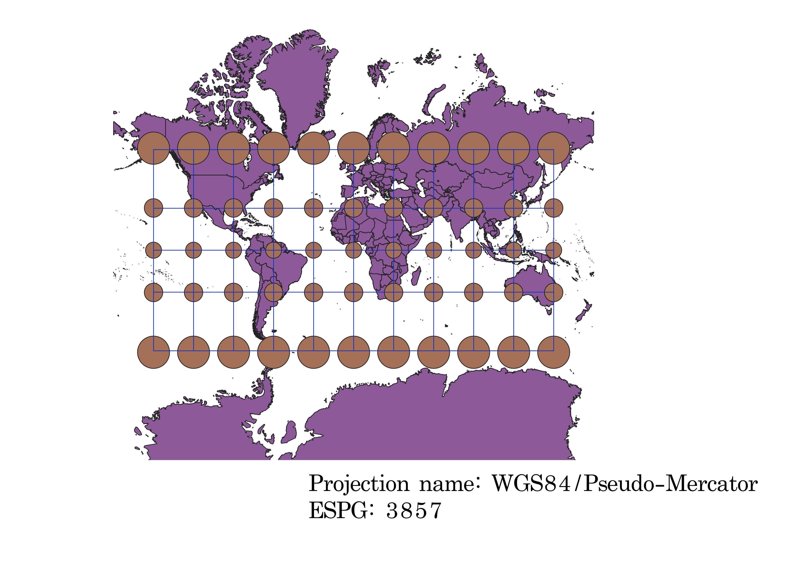

In this project I learned how to display images in different projections
Describe in your own words how you displayed the map in different projections using QGIS
To display the projections in QGIS, I largely followed along with the videos. I first opened QGIS and added the vector layer "ne_10m_admin_0_countries," which created a two-dimensional display of Earth's countries. I then altered the "ESRI" area, selecting different numerical codes which corresponded to different map projections. When applied, the vector layer displaying the countries was altered to fit the shape of the map projection. I then added caps and graticules (the indicatrix mapper), which helped me to see where distortions lay within each projection. Finally, I exported these images as .png files.
WGS84 Projection
I notice that the WGS84 Projection represents direction and spatial relationsips well. However, as you move toward the Poles, distortions occur and areas are stretched horizontally. Additionally, some of the areas become distorted toward the top and bottom of the map, with Greenland looking much larger than it should (similar to the Mercator Projection).

Aitoff Projection
With the Aitoff Projection, I see that, while areas appear to be represented well, direction, spatial relationships, and shapes appear to be distorted as one moves north, south, east, or west. At the bottom of the map, the indicatrix circles are very close together, indicating spatial distortion, and they become more oblong, indicating a stretching of continents.

Azimuthal Projection
The Azimuthal Projection has a great deal of distortions present. As you near the edges of the map, area, spatial, directional, and shape-based relationships begin to deteriorate. Areas and shapes become more horizontally stretched, the spacing between continents is inaccurate, and the Poles appear much larger than they truly are. In my opinion, the shape distortion is the most obvious, as the continents in the center look miniscule when compared with those toward the outer edges of the projection. Also, because it appears to be a view of Earth from the top down, it is difficult to accurately display each continent/country.

Equal Cylinder Projection
In the Equal Cylinder Projection, spatial relationships appear to be preserved well, while shapes are, as with the above maps, quite distorted around the North and South Poles. Horizontally stretched, these continents appear to be thin and misshapen. Directional orientation appears to be well-preserved, however. Also, the shape distortion is not gradual, as it has been with some of the other maps, but rather happens abruptly at the northernmost and southernmost indicatrix markers.

Equidistant Conical Projection
Strikingly similar to the Azimuthal Projection map, the Equidistant Conical Projection possesses distortions in space, area, shape, and direction. Leaving completely blank the northern portion of the map, this projection also appears to be a top-down view of Earth. Continents at the top appear much smaller than those at the edges of the map, and the Poles are greatly stretched and enlargened. As you progress outward, horizontal stretching of the continents becomes more apparent, and those at the outer edges of the map look much larger than normal.

Geostationary Satellite Projection
THe Geostationary Satellite Projection shows only the continents of North and South America, but possesses clear distortions only in spatial relationships and direction. Shape and area appear to be relatively consistent until the northernmost and southernmost reaches of the map, where spatial relationships are slightly altered and the indicatrix mapper circles are much closer together.

Van Der Grinten Projection
The Van Der Grinten Projection contains distortions in space and shape as well as slight directional alteration. Toward the north and south of the map, continents appear much larger, with Greenland looking comparable to Africa in size (a commonality shared with the Mercator and WGS84 Projections). Additionally, the mapper circles are much closer together at the top and bottom of the map, indicating skewed spatial relationships, as well.

Winkel Projection
The Winkel Projection possesses relatively consistent shapes (although there is some distortion at the Poles, where continents appear bigger). Distortions appear slightly in direction and spatial relationships, as the indicatrix mappers are much closer together at the top and bottom of the map.

Pseudo Mercator
While the Pseudo Mercator Projection reveals clear distortions in shape (as discussed above, Greenland appears to be the size of Africa, and as you move to the Poles the continents become dramatically larger), spatial relationships, direction, and area are all well-preserved, as are angles. Perhaps this is why Google Maps likes it so much (and so do I, because now I don't get lost on the way to Harris Teeter!)

EPSG: 3857, 53018, 54034, 54027, 102016, and two additional projections that you choose.
Data used for this project
Download Natrual Earth 1:10m Cultural Vector